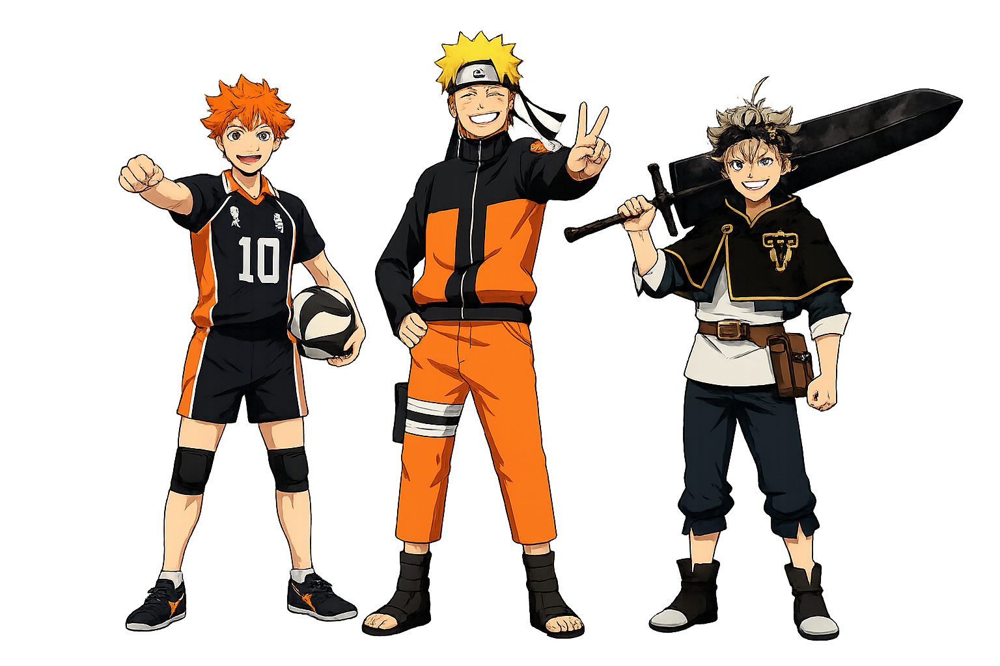

"Programar é a minha magia e desistir não é uma opção."
Explorando a tecnologia através da determinação de Black Clover, Haikyuu e Naruto.
Valores e Tecnologia
Resiliência
Naruto
Não desistir de um bug, por mais difícil que pareça. O código com erro é apenas o "exame chunnin" que preciso superar para me tornar um dev melhor.
Trabalho em Equipe
Haikyuu!!
A evolução constante e o apoio mútuo. Na programação, ninguém cresce sozinho, revisões de código e colaboração são o nosso levantamento perfeito.
Esforço
Black Clover
Compensar a falta de experiência inicial com dedicação extrema. Se eu não nasci com o "talento nato" para lógica, eu o conquistarei com horas de estudo.
Explorando os Universos
Naruto
Em um mundo onde o destino parece selado pelo nascimento, um jovem órfão com um demônio selado em seu interior decide desafiar o ódio de uma vila inteira. Sua meta? Tornar-se o líder máximo para ser reconhecido. Uma jornada sobre como a solidão pode ser transformada em força através de laços inquebráveis.
Haikyuu!!
A altura é uma barreira física, mas não mental. Hinata Shouyou quer ser o "Pequeno Gigante" do vôlei, mas descobre que para vencer é preciso sincronia absoluta com quem você mais detesta. É uma aula sobre como a derrota é o melhor combustível para a perfeição técnica.
Black Clover
Em um reino onde a magia define o seu valor social, Asta nasce sem uma gota de mana. Enquanto todos usam grimórios poderosos, ele empunha o ferro bruto e o esforço físico. É a prova definitiva de que, em um mundo de gênios, o esforço de quem nada tem pode anular a magia de quem tudo possui.